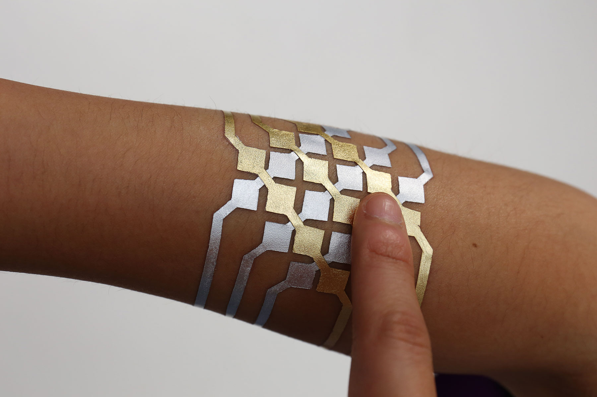
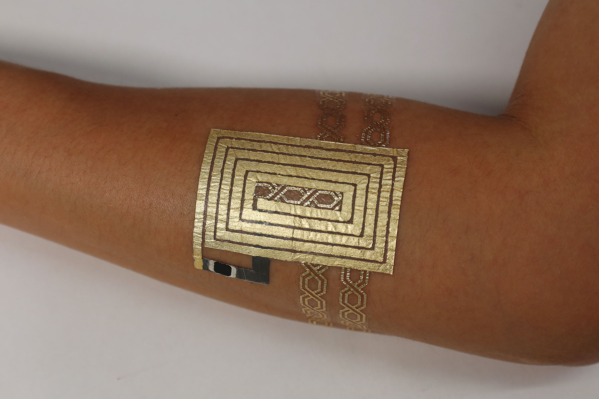

Na het eerste hoorcollege van het van HCI ben ik geïnspireerd door alle verschillende voorbeelden die genoemd werden. Na het hoorcollege werden we gevraagd om een opdracht te doen, deze opdracht hield in dat ik een onderzoek moet doen naar smart tattoos die sociale interactie stimuleren. Na onderzoek gedaan te hebben naar de meest technologische voortstrevende smart tattoo, heb ik er voor gekozen om dieper in te gaan in de laatste innovatie van Duoskin. Dit bedrijf streeft er voor dat smart tattoos niet alleen technisch goed werken, maar ook visueel aantrekkelijk zijn. Wanneer iemand een smart tattoo zou nemen is deze namelijk vaak zichtbaar. Deze smart tattoos kunnen voor verschillende doeleinden gebruikt worden. De smart tattoos kunnen onder andere gebruikt worden om ingezet te worden als knoppen voor de gebruiker zijn smart devices, zoals bijvoorbeeld een telefoon of laptop. Daarnaast kan ook de lichaamstemperatuur door een smart tattoo gemonitord worden, door gebruik te maken van materiaal dat van kleur verandert naarmate de lichaamstemperatuur stijgt of daalt. Als laatste kunnen de smart tattoos ook ingezet worden voor om een draadloze connectie op te zetten met een ander apparaat, dit wordt mogelijk gemaakt door een NFC chip. Deze chip bevat willekeurige informatie die gekozen kan worden door de gebruiker, wanneer een ander apparaat dichtbij deze NFC chip komt, wordt de informatie doorgegeven naar het apparaat. Dit alles wordt mogelijk gemaakt door gebruik te maken van dun bladgoud en computers, het bladgoud geeft de elektronische signalen door naar de computer wanneer een gebruiker de smart tattoo aanraakt. In de onderstaande foto’s kunnen voorbeelden bekeken worden van smart tattoos.
 Via: https://duoskin.media.mit.edu/
Door mij verdiept te hebben in de verschillende mogelijkheden die wearables bieden, ben ik nieuwsgierig wat de toekomst te bieden gaat hebben wat betreft deze vorm van technologie. Door deze opdracht te maken ben ik wijzer geworden over niet alleen smart tattoos maar ook andere wearables zoals smartwatches. Deze smartwatches worden in tegenstelling tot smart tattoos al veel gebruikt. Naar mijn mening komt dit doordat smartwatches meer functionaliteit hebben en een interface hebben die meer lijkt op wat mensen gewend te zien zijn op smartphones. In de toekomst zie ik smart tattoos in populariteit groeien, wanneer deze techniek nog meer functies krijgt.
Wanneer ik terugkijk naar deze eerste week van het vak HCI-Technologies ben ik erg tevreden wat ik door het hoorcollege en door mijn eigen onderzoek geleerd heb. Doordat ik meer te weten ben gekomen over de verschillende soorten wearables en de functies die deze vervullen, is mijn nieuwsgierigheid naar wat de toekomst te bieden heeft nog vele malen gegroeid. Ik ben sinds kort dan ook aan het kijken om een smartwatch aan te schaffen, om alvast te beleven hoe het is om met zo’n soort apparaat dagelijks rond te lopen.